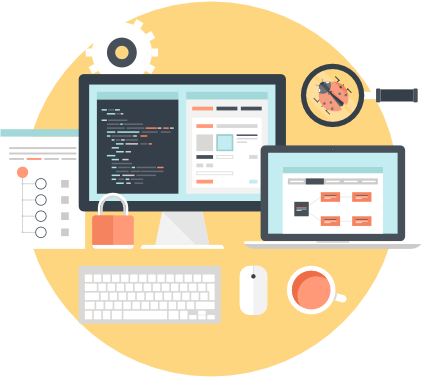

A desktop developer is a programmer who writes code for software applications that (1) run natively on operating systems like macOS, Windows, and Linux, and (2) don't need to be connected to the internet. When you become a desktop developer, your responsibilities will depend on the type of applications you create, the expectations of your employer, and how much experience you have. In general, it will be your job to prototype, build, implement, and maintain the source code behind the programs you develop.
